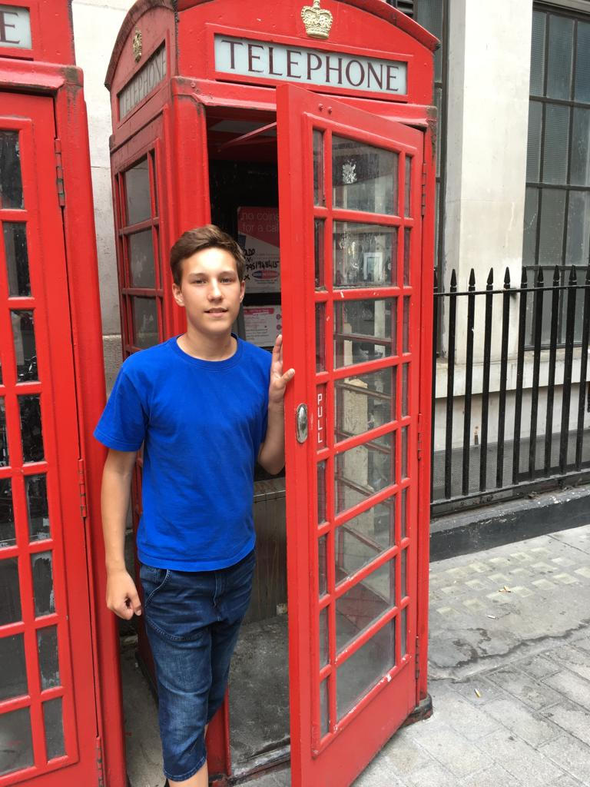
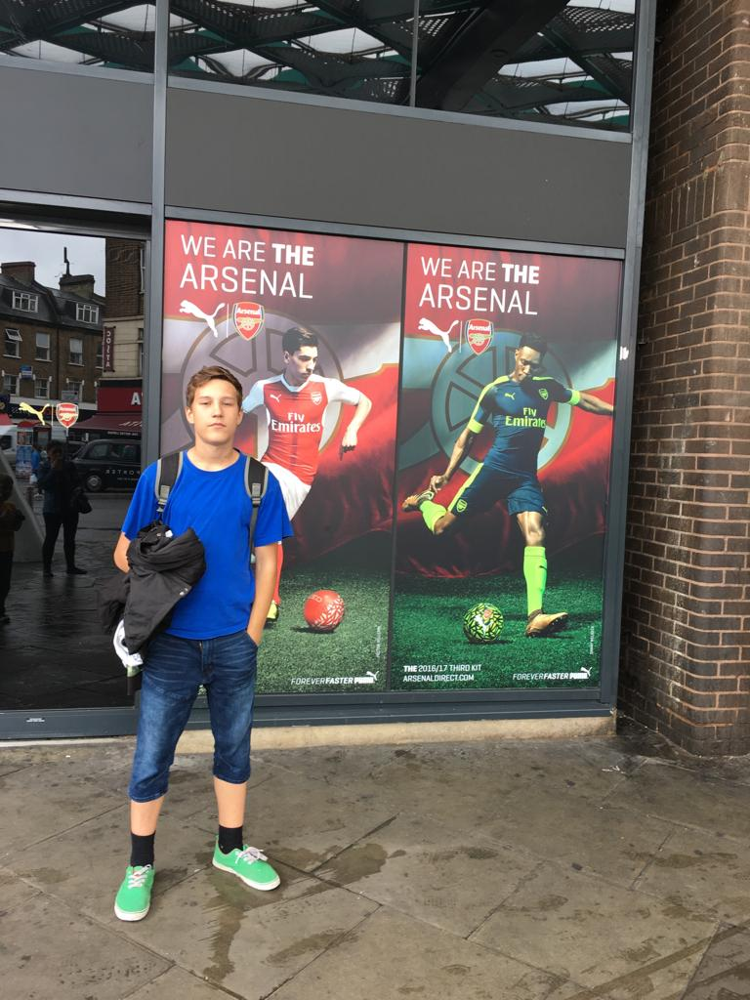

My Adventure in England
The most memorable time in England was walking around London. There I was able to take pictures of the red phone booth and Big Ben. I also visited the place where the popular English soccer club Arsenal is located.

